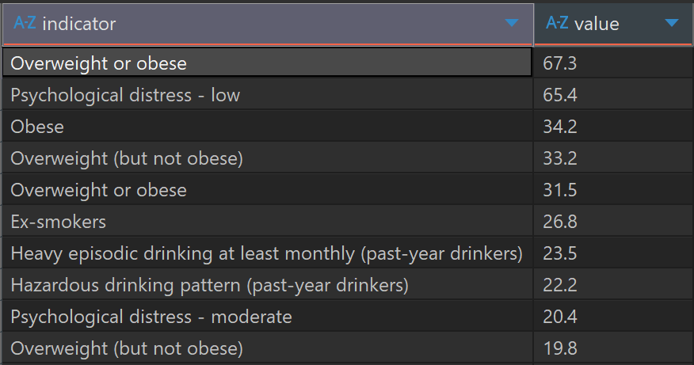
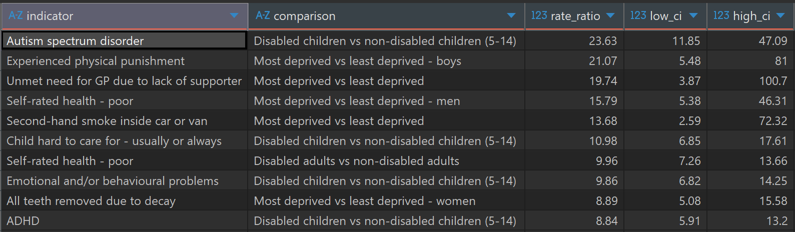
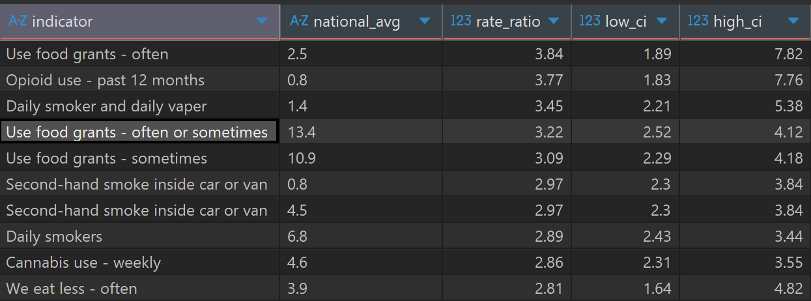
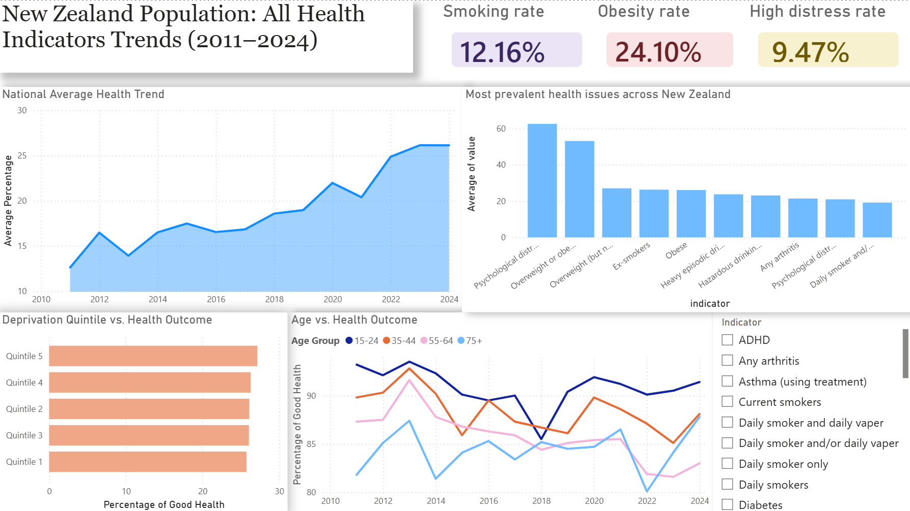
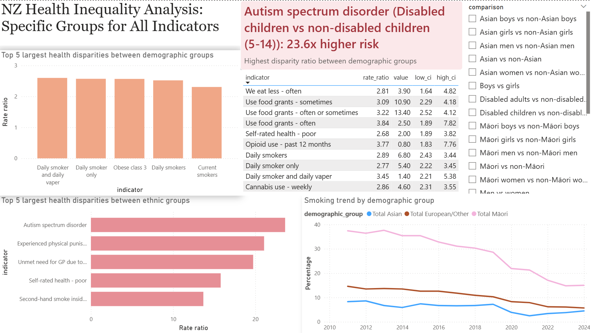
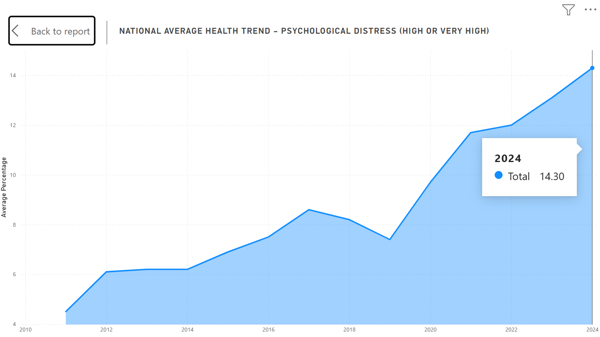
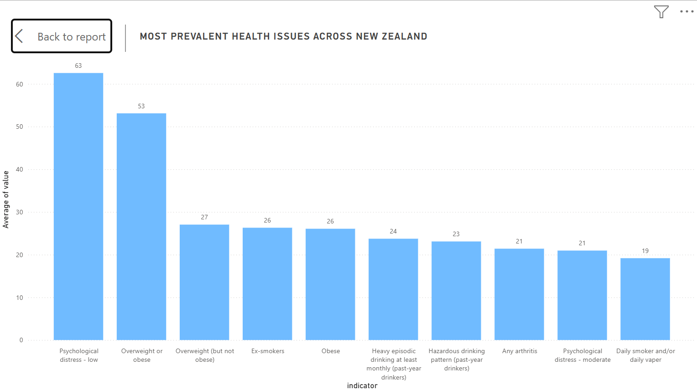
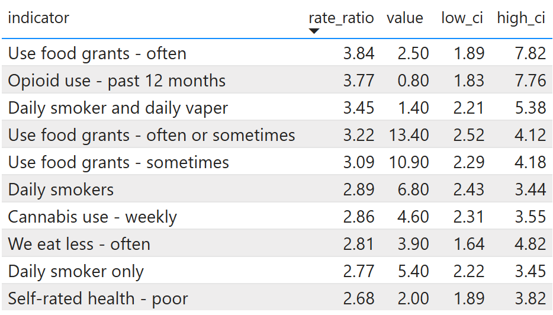
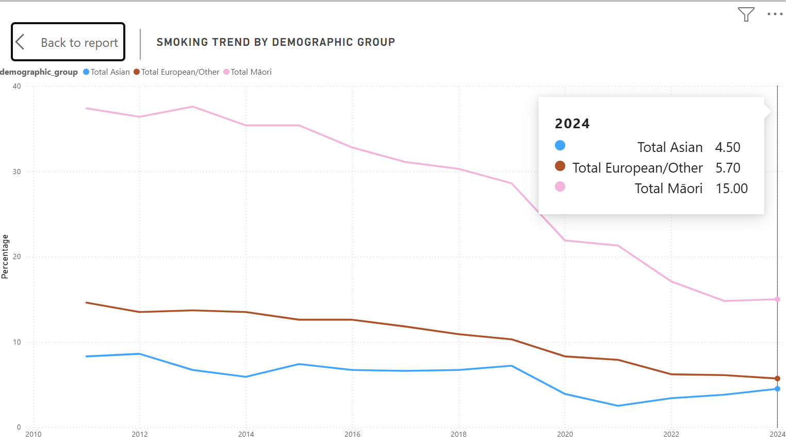
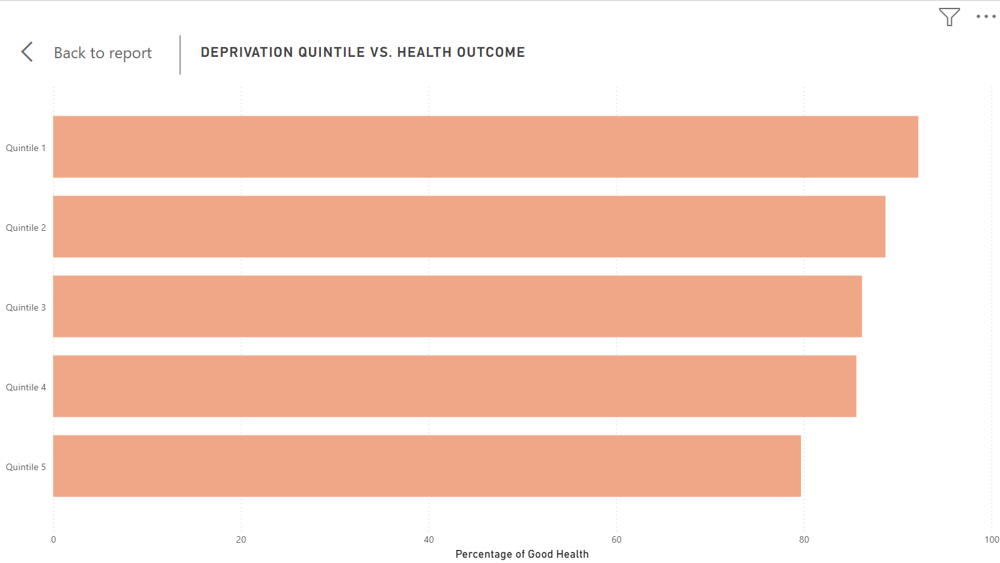

A Decade of Health Outcomes in New Zealand: Trends and Inequality
Health inequalities remain a major public health challenge in New Zealand. Different demographic groups experience very different health outcomes depending on ethnicity, income, and access to healthcare. This project analyses the New Zealand Health Survey (2011-2024) to identify the largest health disparities across demographic groups and explore how these inequalities have evolved over time.
Technical Stack: SQLite (ETL/Analysis), Power BI (Visualization), DAX
Key Questions
- Which health issues are most prevalent in New Zealand?
- Which demographic groups face the highest health risks?
- Where are the largest health disparities?
- Are inequalities widening or improving over time?
Data & Methodology
The analysis uses data from the New Zealand Health Survey. The raw datasets were cleaned and transformed using SQL to create three analytical tables. Download the cleaned csv files here.
Data Pipeline
- final_prevalences: prevalence of health indicators by demographic group
- final_rate_ratios: disparity ratios between demographic groups
- final_time_series: time-series dataset for trend analysis (2011–2024)
Key transformations performed in SQL included:
- Reshaping wide-format time series data into long format
- Cleaning suppressed survey values
- Standardising demographic group labels
- Categorizing health indicators
Finding 1: Most Prevalent Health Issues
To understand the national health baseline, I first identified the most common health indicators in 2024.

67.3% of the population is classified as either "Overweight or obese." This is the single most common health indicator in the dataset. The population is split almost evenly between those who are "Obese" (34.2%) and those who are "Overweight but not obese" (33.2%). With over two-thirds of the population falling into these categories, the long-term risk for secondary conditions like Type 2 diabetes and heart disease is extremely high. This suggests that metabolic health is a universal public health challenge.
Mental health markers appear as the second-largest health issue in New Zealand. While low distress is often considered a normal part of life, the high percentage (65.4%) suggests a baseline level of mental strain across the majority of the population. The moderate distress level is 20.4%, indicates that mental wellbeing support is a high-demand service area.
Drinking behaviours also appears among the most common indicators. Unlike smoking, which shows a declining trend, alcohol consumption patterns show a consistent and high-risk behavior that has not yet seen a similar decline.
Finding 2: Largest Health Inequalities
Next, I analysed health disparities between demographic groups using rate ratios.

The analysis revealed extremely large disparities for several indicators. Some of the largest disparities occur between disabled and non-disabled populations. For example, autism spectrum disorder among disabled children aged 5–14 shows a rate ratio exceeding 23× compared with non-disabled children. Disparities also occur between the most deprived and least deprived populations. The most deprived group (boys) experienced physical punishment 21 times more compared with the least deprived group. Similar patterns are observed in unmet healthcare needs and second-hand smoking, highlighting persistent structural health inequalities.
Finding 3: Ethnic Health Inequality
Ethnic disparities were examined by comparing Māori populations with non-Māori populations. We use the final_rate_ratios table to find which indicators have the highest disparity for Māori vs. Non-Māori (i.e., if low_ci is greater than 1.0, the group has a significantly higher risk. If high_ci is less than 1.0, they have a significantly lower risk).

The results show significantly higher risk for several health indicators among Māori populations, including smoking and healthcare access barriers.
Interactive Dashboards
Two interactive dashboards were created using PowerBI to visualise trends and disparities. The pbix file can be viewed here.
National Health Trends Dashboard

Ethnic Inequality Dashboard

Key Insights
"Are health outcomes improving?"

To understand long-term health trends, I analysed the average national health indicators over time. Several health indicators improved during the period, including declining smoking rates. However, obesity and psychological distress increased steadily. High psychological distress is one of the fastest growing health concern, affecting approximately 14% of New Zealand population.
"Which health problems affect the population most?"

Obesity remains the most prevalent health issue among adults, affecting almost one-third of the population. Psychological distress, drinking and smoking also represent significant public health challenges.
- © Luna Ngo
"Where are ethnic disparities largest for Māori population?"
This table identifies the most significant health disparities between the Māori and non-Māori populations in New Zealand, using rate ratios to quantify the gap. A rate ratio of 1.0 would indicate equality, any number higher indicates a higher risk or prevalence for the Māori population.

The most severe disparities are concentrated in indicators of financial stress and food security. Māori are 3.84 times more likely to use food grants "often" compared to non-Māori. While the national average for using food grants "often or sometimes" is 13.40%, the disparity ratio remains high at 3.22. Indicator "We eat less - often" has a rate ratio of 2.81, showing that the economic struggle translates directly into reduced food consumption.
"Are health disparities getting worse over time?"

Smoking prevalence has declined across all populations over the past decade. However, Māori smoking rates remain approximately three times as high as those of European and Asian populations, indicating persistent health inequality despite overall improvements.
"Does income deprivation affect health outcomes?"

A clear socioeconomic gradient exists in health outcomes. Individuals living in the most deprived areas (Quintile 5) report significantly lower levels of good health compared with those in the least deprived areas (Quintile 1).
Conclusion
This analysis highlights the persistent health inequalities across New Zealand. Lifestyle-related conditions are among the most prevalent health challenges in New Zealand. While some public health interventions appear to be improving outcomes such as smoking rates, other issues such as mental health continue to worsen.
Understanding where disparities are largest allows policymakers and healthcare providers to better target interventions and improve equity across the population.